Mockups: five screens with an API and a mock but no page
Each direction is a self-contained HTML file in Oracle's current design system (tokens from web/app/globals.css, components from web/components/ds), with invented data. Below the main screen, each file has a dashed “States & roles” board showing the empty, loading, error and partial states, plus how the screen differs for owner, approver, commenter and viewer. The board is for review only and is not product UI. On a phone, the inspector opens as a bottom sheet, the way the app does it; the sheet is drawn open at the end of the page. Every frame was rendered in light and dark at 1440 px and 390 px. Inter Tight and DM Mono are not embedded (no external requests), so the PNGs fall back to Liberation Sans/Mono.
1 · Composition inspector, module catalog and module policy
GET /v1/documents/{doc}/composition · POST /v1/compositions/recommend · POST …/composition/revisions, /publish · /v1/module-catalog* · /v1/module-policy · /v1/template-manifests/{template}
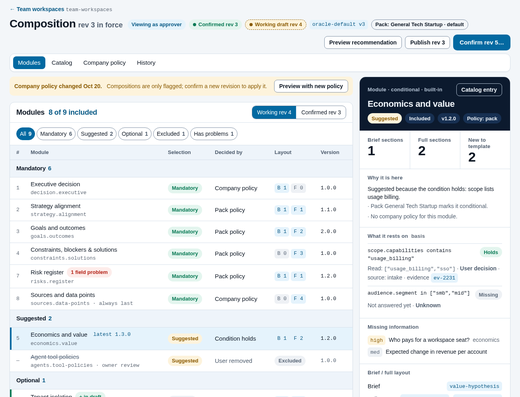
A · Module table + inspector
Plan's pattern: modules grouped Mandatory / Suggested / Optional, a 380 px inspector with why (basis, knowledge state, evidence), missing information, brief/full impact, dependencies and versions; draft diff and required reason below. Catalog, Company policy and History are tabs.
Trades off: The revision story (diff, outline) is secondary; best at “why is this module here?”
Open HTML (add ?theme=dark) · 1440 light · 1440 dark · 390 light · 390 dark
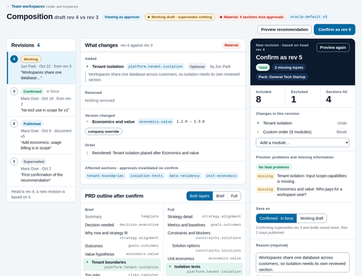
B · Revision-centric
Timeline of revisions, the draft's diff against the revision in force, and the PRD outline after confirming in Brief | Full columns; the inspector is the confirm form (confirmed vs working, reason, base revision).
Trades off: Weak for per-module reasoning; strongest for “never last-write-wins” and showing which sections lose approvals.
Open HTML (add ?theme=dark) · 1440 light · 1440 dark · 390 light · 390 dark
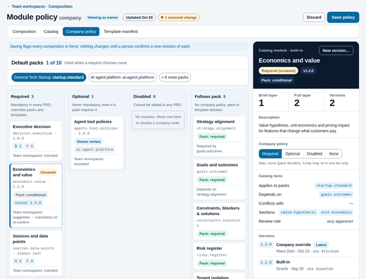
C · Company policy board (owner)
Catalog modules as four lanes (Required / Optional / Disabled / Follows pack), default packs on top, inspector = catalog entry with versions, contract hash and contract.
Trades off: An owner tool, not the per-PRD inspector; read-only for everyone else.
Open HTML (add ?theme=dark) · 1440 light · 1440 dark · 390 light · 390 dark
Pick: A for the composition screen; reuse B's diff + Brief/Full outline inside A's Confirm step; C becomes A's owner-only Company policy tab.
2 · Impact explorer and targeted regeneration plan
GET /v1/documents/{doc}/versions/{n}/impact · /v1/baseline/entities/{id}/impact · /v1/trace/changes/{id}/impact; acting per row: POST /v1/trace/staleness/actions, /v1/spec-requests/{id}/regenerate, /v1/documents/{doc}/regenerate/estimate + /regenerate
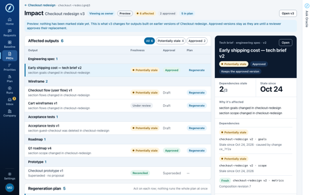
A · Table + inspector + plan list
Affected outputs grouped by category (stalest first); inspector shows dependencies, reasons, the proposal's “how” and per-row actions; the plan and the baseline items reached sit below.
Trades off: Cheapest, matches SpecStaleness and Plan; “why” is text only and the plan is apart from the table.
Open HTML (add ?theme=dark) · 1440 light · 1440 dark · 390 light · 390 dark
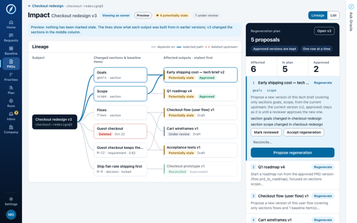
B · Lineage graph + plan sidebar
Subject → changed sections and baseline items → outputs, with the selected path highlighted and deleted upstreams dashed; the plan is the sidebar.
Trades off: Explains “why” best; most work to build, crowded past ~15 outputs, becomes a grouped list on a phone.
Open HTML (add ?theme=dark) · 1440 light · 1440 dark · 390 light · 390 dark
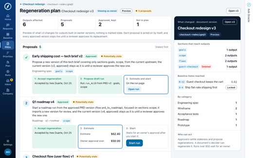
C · Plan-first
One step card per proposal: settle staleness → propose a draft run or get an estimate (threshold, owner approval) → start.
Trades off: Best for getting it done and the only one showing cost and approval per row; hides per-dependency detail.
Open HTML (add ?theme=dark) · 1440 light · 1440 dark · 390 light · 390 dark
Pick: A, with C's three-stage strip in the inspector's action section. No direction has “run the whole plan”: the API has no such route.
3 · Evidence inspector for a PRD version
GET /v1/documents/{doc}/versions/{n}/evidence · POST …/section-links · DELETE /v1/section-links/{id} · GET /v1/section-links
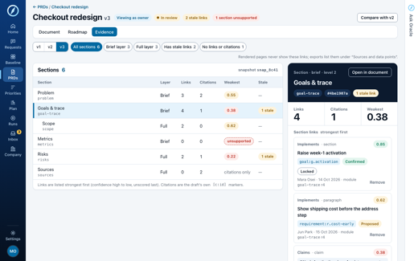
A · Section table + inspector
One row per section (layer, links, citations, weakest confidence, stale); inspector lists links strongest first, the draft's citations and the Add-a-section-link form.
Trades off: Direct mapping of the API, cheapest; the section text isn't visible beside its evidence.
Open HTML (add ?theme=dark) · 1440 light · 1440 dark · 390 light · 390 dark
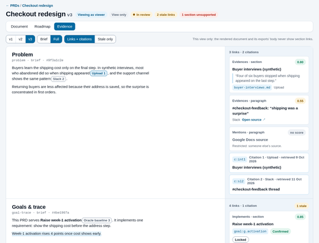
B · Reading view with evidence margin
The version text with CitationChips, and evidence cards aligned in a margin per section, like comments.
Trades off: Best for judging support in context; needs the version body too, and scanning for gaps is slower.
Open HTML (add ?theme=dark) · 1440 light · 1440 dark · 390 light · 390 dark
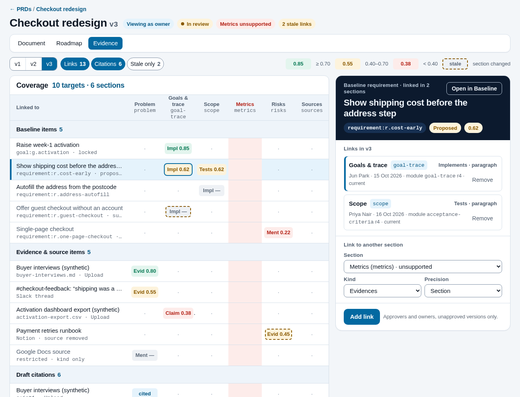
C · Coverage matrix
Targets and citations as rows, sections as columns; an empty column flags an unsupported section; target-centred inspector.
Trades off: Finds gaps and reused evidence at a glance; cramped past 6 sections, weak for reading excerpts.
Open HTML (add ?theme=dark) · 1440 light · 1440 dark · 390 light · 390 dark
Pick: A, with C's “no links or citations” signal (already A's filter). B later as an evidence-margin mode of the Document tab.
4 · Viewer and review for low-fi wireframes and SVG flows
GET /v1/design-artifacts/{version_id} · GET …/outputs/{name} (sandboxed iframe) · POST …/reviews
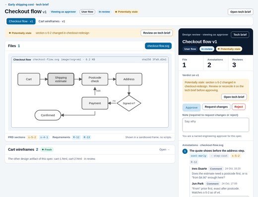
A · Canvas + review inspector
One version per page: the selected file large, the inspector holds verdicts (Approve off while potentially stale), numbered annotations with threads, version reviews and provenance.
Trades off: One file at a time; comparing screens means switching.
Open HTML (add ?theme=dark) · 1440 light · 1440 dark · 390 light · 390 dark
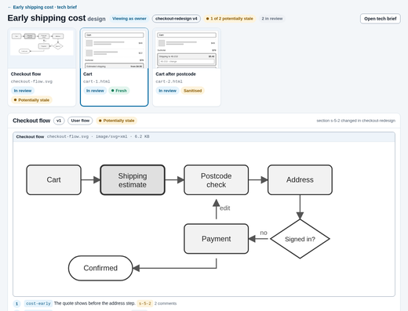
B · Filmstrip and compare
All of a spec's outputs: thumbnails, the flow full width, wireframes side by side, one verdict bar per version and one review timeline.
Trades off: Best for “does the set hang together”; long page, annotation threads only in the timeline.
Open HTML (add ?theme=dark) · 1440 light · 1440 dark · 390 light · 390 dark
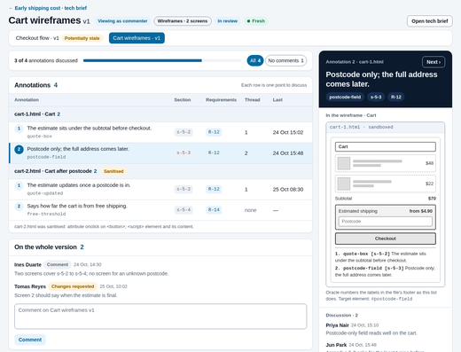
C · Annotation checklist
Each annotation is a row to discuss (progress “3 of 4 discussed”); the inspector shows that annotation in the file with its thread.
Trades off: Strongest for structured review of many annotations; the artifact itself is secondary.
Open HTML (add ?theme=dark) · 1440 light · 1440 dark · 390 light · 390 dark
Pick: A; borrow C's “no comments” filter and B's side-by-side mode for 2–4 wireframe screens. No pins over the artifact: a sandboxed, script-free iframe can't report element positions, so numbers come from the labels Oracle writes into each wireframe.
5 · Quality evaluation
GET /v1/quality/criteria · GET …/versions/{n}/readiness · POST …/evaluations, …/evaluations/human, …/quality-review · GET /v1/evaluation-reports, /v1/evaluation-findings · /v1/llm-jobs/{id} (+ cancel/retry)
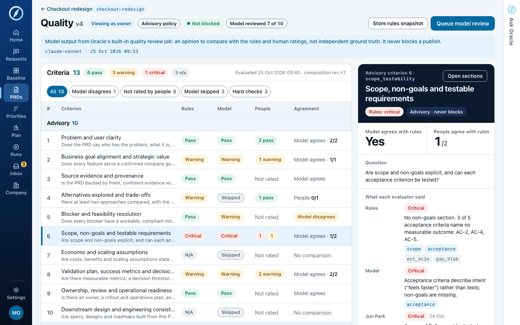
A · Criteria table + inspector
One row per criterion (10 advisory + 3 hard) with Rules · Model · People · Agreement; the inspector shows every evaluator's verdict and the rating form.
Trades off: Most information in one place, closest to PublishView; raters see rules and model before rating (anchoring); no history.
Open HTML (add ?theme=dark) · 1440 light · 1440 dark · 390 light · 390 dark
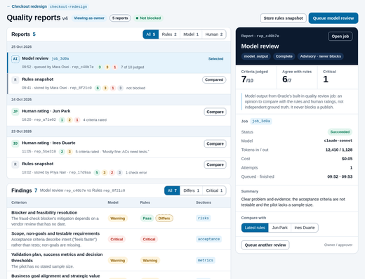
B · Report timeline + compare
Evaluation reports by date (rules / model / human); findings of one report beside another; the model job's status, tokens, cost and retry/cancel.
Trades off: Best for audit and job handling; current state per criterion is secondary and rating happens elsewhere.
Open HTML (add ?theme=dark) · 1440 light · 1440 dark · 390 light · 390 dark
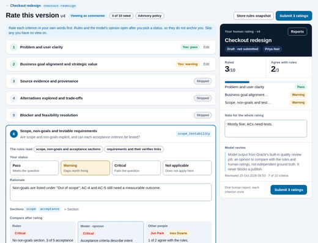
C · Guided “Rate this version”
Criteria as cards; rules, model and other people's verdicts stay hidden until you pick a status; one human report submitted at the end.
Trades off: Best ratings (no anchoring), commenter-focused; not an overview.
Open HTML (add ?theme=dark) · 1440 light · 1440 dark · 390 light · 390 dark
Pick: A as the screen; add C's “hide rules and model until you pick” as an option of A's rating form, and B's report list as a History section.